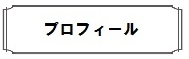

声楽を松田淑子氏、ピアノを天内良子氏、佐藤正子氏に師事。
みなとみらいホール、横浜美術館等でのクラシックリサイタル開催。
オーディションを経て、舞台音楽研究会公演オペラ、コンサートに出演。

その後、ジャズの自由なリズム、音楽に魅せられてジャズに転向。
ジャズピアニスト岩谷泰行氏に師事。２００７年より東京、横浜のジャズクラブ、コンサートホール等にてライブ出演中。
カルチャークラブ、サークルにてヴォーカル講師。音楽教室主宰。
２０１４年まで和光堂（株）にて、乳幼児の親子リトミック専属インストラクター。
現在地域ケアプラザ、社会福祉協議会等運営のリトミック講師を務めている。
ケアプラザ、老人ホームにて高齢者向けコンサートも行う。
ヤマハ指導グレード、リトミック研究センター・ディプロマ指導者資格取得。
X（旧Twitterは）こちら
Instagramはこちら
E-mail: sing_sing_yumitch@yahoo.co.jp